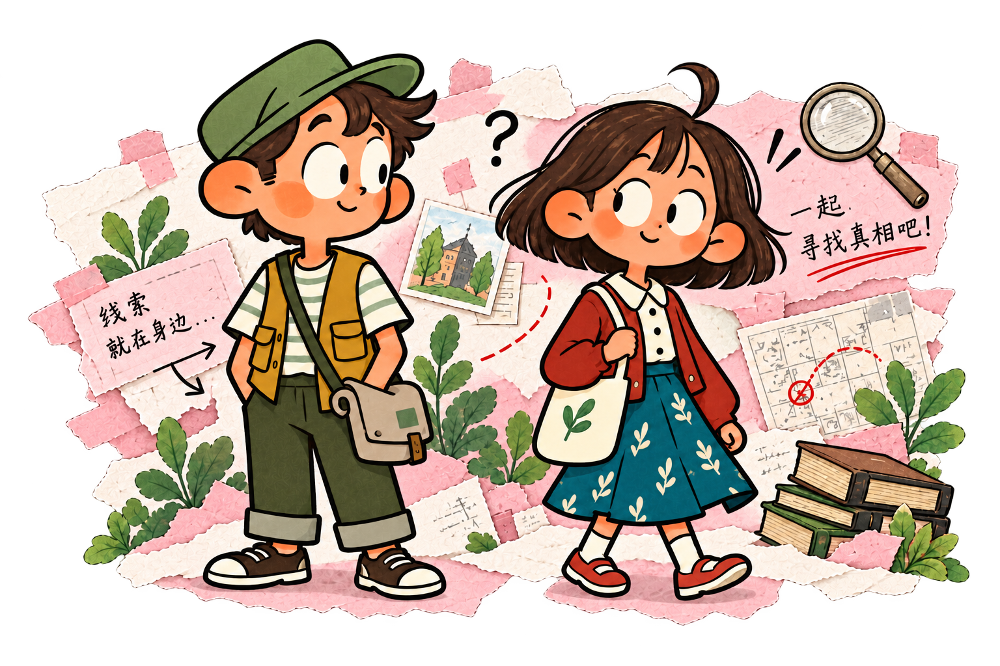

每一个我们，都有值得珍藏的故事。
♡ EVERY LITTLE STORY OF US
把回忆写成故事，在彼此的视角里重新相遇。
把平常的日子，写成只属于我们的纪念。♡

不同的片段，都是我们的故事。⟶
换一个关键词，或者清除搜索再看看。
《惊喜》已经可以游玩。也为你自己的故事，留下一页新的位置。
MY STORY NOTEBOOK
把你的剧本放进来，先看看，再把它留在故事架上。
PNG、JPG 或 WebP，1MB 以内。只保存在当前浏览器。
A LITTLE SOMETHING FOR US
给每一段故事，准备一点小心意。
等你确定商城内容后，再把喜欢的故事封面、纪念贴纸或角色装扮放进来。